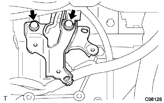

Cut the Revoli Yusho Sensen Sensor Conector.
 |
Remove the bolt and remove the Revoli Yushyon sensor from the Automatitsutran Axle.
Trans mission Revolution Sensor removal |
| 1. Air cleaner ASSY is removed |
Remove the air cleaner kit and air cleaner hose No.1.
Remove the air cleaner fillyer errage.
Remove the three bolts.
Cut the air clenine Retsu No.1 and remove the air cleaner case.
| 2. Remove the air cleaner bracket |
|  |
Remove the two bolts and remove the air cleaner braketto.
| 3. Transmission Revolution Sensor removes |
Cut the Revoli Yusho Sensen Sensor Conector.
|
Remove the bolt and remove the Revoli Yushyon sensor from the Automatitsutran Axle.